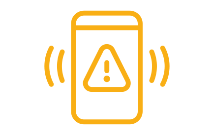

-

UN LUGAR SEGURO
Encuentra las rutas mas seguras de la ciudad, con menos reportes de peligro.
-
evita los lugares con reportes de peligro
Te mostraremos los lugares que han sido reportados y podrás ver detalle de lo sucedido aquí.

-
Modo DEMO
Este modo protegerá tus apps, de esta manera proteges tus cuentas bancarias, contactos, fotos y en general tu información personal creando un espacio en el que solo se puede salir desde la clave normal de tu celular
-
grabación de los hechos
En modo demo tu cámara se activará para grabar durante un minuto, este video se enviará a la nube que puedes consultar por la pagina web en cualquier momento.
-

mensaje de precaución a contactos de emergencia
Se enviará un mensaje predeterminado a tus contactos de emergencia.
-
crea tu llave de seguridad
Esta llave será usada cuando tengas la oportunidad de activar manualmente el modo demo.
-
ruta de seguridad
Crea una ruta fija de un punto A a un punto B. si en el proceso se detecta el abandono de la ruta se activará el modo demo instantáneamente
-
elije tus contactos de emergencia
Podrás añadir y eliminar contactos a los que se les enviará una notificación
Vea cómo se desarrollan los incidentes y obtenga la historia real de las personas en la escena.
Los videos le muestran lo que realmente está sucediendo. Observe cómo se desarrollan los incidentes desde diferentes ángulos y sígalos hasta que se resuelvan.
La información rápida y precisa marca una diferencia significativa en las emergencias.
Las alertas ciudadanas se emiten instantáneamente; esto puede ser horas antes de que se emitan las Alertas Amber para los niños en peligro. Esta velocidad ha sido fundamental para actuar en eventos importantes como secuestros y personas mayores desaparecidas.
Cuando puedas, contribuye a ayudar a resolver una situación.
Solías tener que llamar a una línea de información de la policía para obtener ayuda. Ahora puede usar esta app para compartir videos e imagenes y compartir actualizaciones relevantes con otros. También puede dejar comentarios, que han ayudado a localizar personas desaparecidas.
Los servicios de emergencia y de hospitales salvan vidas con actualizaciones más rápidas.
Los departamentos pueden usar esta app para dirigir los recursos de manera más efectiva porque pueden ver la intensidad de un incendio en un video en vivo, mientras que los cirujanos de urgencias pueden preparar los quirófanos para los pacientes 20 minutos antes incluso de recibir una llamada de los técnicos de emergencias médicas.
Aumentar la transparencia entre la ciudad y sus habitantes.
Creemos que debemos unirnos contra el crimen. Todos merecen estar seguros, y ahora, todos pueden cuidarse mejor unos a otros. Tener información en tiempo real disponible y abierta para todos nos permite a todos tomar decisiones más inteligentes para mantenernos seguros.
Todos están más seguros cuando todos tienen el mismo acceso.
Esta app es para todos y, por lo tanto, es completamente independiente. Con esta app, todos los miembros de la comunidad, ya sean residentes o miembros de las fuerzas del orden, tienen el mismo acceso a la aplicación y a su información imparcial.